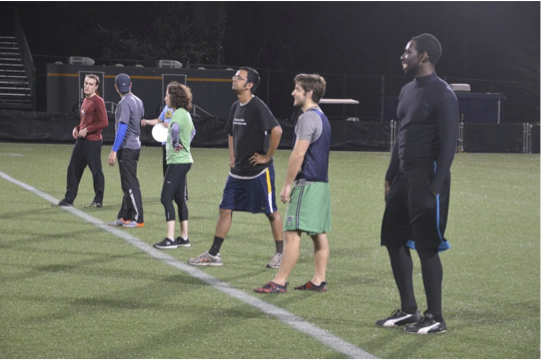

Introduction
Info 253: Web Architecture
Kay Ashaolu
How's your VM?
You have setup Lubuntu (a variant of Ubuntu) on your computer
You are running an operation system within an operating system
This ensures that everyone is under the same environment and has access to the same tools
Hi my name is Kay
Princeton EE
Credit Suisse, Morgan Stanley
Independent web dev consulting
MIMS ‘13
Ancestry.com
Lecturer

Hi my name is Kinshuk
Course Goals
Facebook.com -> "magic" -> web page
Demystify "magic"
Learn how to build "magic" with existing tools
Know the challenges of building "magic"
Understand the trade-offs made when building "magic"
Course Layout
Friday's 9 am - 12 pm
Two 50 minute lecture and a 50 minute lab
10 minute break after every section
Class Prep assigned for each class
All lectures, assignments, readings, and labs will be posted on our
course GitHub repository
Course Work
4 individual homework assignments building an web application
1 group project building an web application
11 in class short labs to go over aspects of building a web application
More on labs
There will be a short assignment for the last 50 minute section of most classes
It’s designed to be completed within the 50 minutes
Labs are due at 11:59 pm the day of lecture
You can leave class early and do the lab on your own, but you must
submit it before midnight
Technologies you will use
Languages
HTML
CSS
JavaScript
Python
SQL/Active Record
Tools
Git
Unix / Terminal
Firebug
Amazon AWS
But don't worry
This is not primarily a programming class
Grades are based on the demonstration of understanding the base concepts
Grades are not based on extra bells and whistles, but are reserved for extra credit
Kinshuk and I are here to help
This is a Graduate class
Perform well without supervision
Understand readings from a variety of different areas on the web
Ask for help proactively
Get frameworks working on your virtual machine
Responsibilities
Me
Explain Core Concepts
Understand design trade-offs
Introduce new technologies
Tie everything together
You
Understand lectures and do class prep
Explore new technologies
Work independently and in groups
Office hours and wait list
Kay’s office hours are by request via Google hangout
Kinshuk’s office hours:
Use the
issue tracker
on our main git repository to ask questions to the instructors and to the class
Wait list will be processed normally before the 3rd week (Sept 16th)
After that come see me
Grades
Labs: 15%
Graded on a √, √+, √- basis
Assignments: 45%
Graded on a numeric basis
Project: 40%
Graded on a numeric basis
There is
no midterm nor final
Questions?
Why are you in this class?
The Web is important
Democratizes information
Decentralized
Low barrier of entry
The Web is built on composable parts
Internet
How data gets from one network to another
Network Stack
How data gets from one computer to another
Browsers
One (of many) destinations data goes to
HTML/CSS/JavaScript
One (of many) representations of data transmitted over the web
Highway vs Railway
Highway: Simple and Composable
Any machine with wheels can use it
Cars can drive on any highway, but also off-road
Motorcycles and trucks can use roads as well as highways
Uncoordinated
Railway: Complicated but Efficient
Must have the right track gauge
Must coordinate with other traffic
If you upgrade one part of the system, everything else must be upgraded
Need specially made vehicles for railway
The Internet is like a highway
More like an interconnected large set of highways
It’s the longest running computer system in the world
Protocols (UPS) are agnostic of their content (packages)
Pieces can be upgraded incrementally
Protocols
A protocol is a system of rules of transmitting data
UPS has a system of trucks and vans that get packages from one place to another
Data is delivered to a destination (browsers)
Just like packages deliver to a destination (address)
Data can be interpreted, and used as information
Like packages can be appreciated in a number of different ways
Browsers interpret data into information
Browsers interpret data as text
HTML
CSS
JavaScript
Browsers interpret data as other media
Images
Music
Video
Questions?